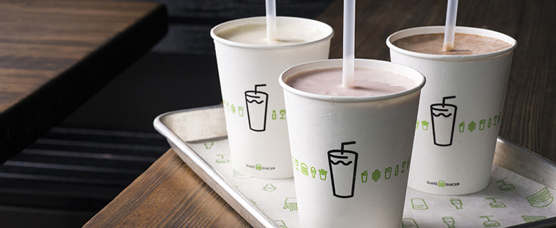
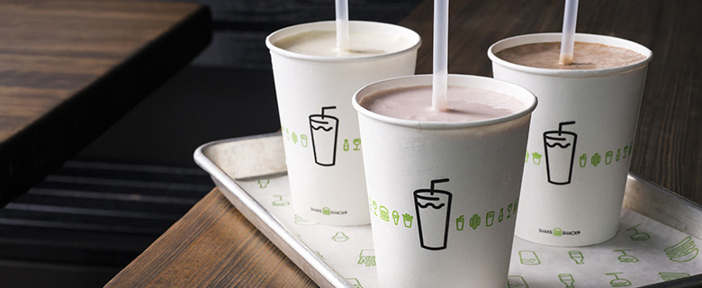

쉐이크쉑은 세상에 필요한 사려깊은 가치를 통해 좋은 사회를 만들고자 합니다.
깐깐하게 엄선한 최상의 식재료, 자연을 생각한 친환경 인테리어, 지역 사회와 함께 성장하는 공헌 활동까지 쉐이크쉑은 가치 실현을 위해 노력하고 있습니다.
“세상에 필요한 사려깊은 가치”는 쉐이크쉑의 신념이자 앞으로 나아가야할 방향입니다.
세상에 필요한 사려 깊은 가치
쉐이크쉑은 신선하고 좋은 재료의 음식과 즐겁고 활기 넘치는
지역사회의 모임 공간, 그리고 게스트를 향한 따뜻한 호스피탈리티를 통해
우리의 핵심 가치인 “Stand For Something Good”을 실천합니다.
location

뉴욕에서 온 파인 캐쥬얼 레스토랑, 쉐이크쉑
쉐이크쉑은 2001년, 뉴욕 메디슨 스퀘어 공원 복구 사업을 위한 USHG*의 핫도그 카트에서 시작되었습니다. 공원 내 "I ♥ TAXI" 아트워크로 꾸며진 핫도그 카트는 매해 여름, 쉑팬들이 길게 줄 섰을 정도로 인기를 끌었습니다. 2004년, 많은 인기에 힘입어 메디슨 스퀘어 공원에 ‘SHAKE SHACK’ 이라는 간판을 걸고 시작한 것이 전 세계가 사랑하는 브랜드, 쉐이크쉑이 되었습니다.
USHG(유니언 스퀘어 호스피탈리티 그룹)*
미국 유니언스퀘어카페와 미슐랭 가이드 1스타인 그래머시태번, 더 모던 등
10여 개의 외식업체를 운영하는 글로벌 외식 기업
 
